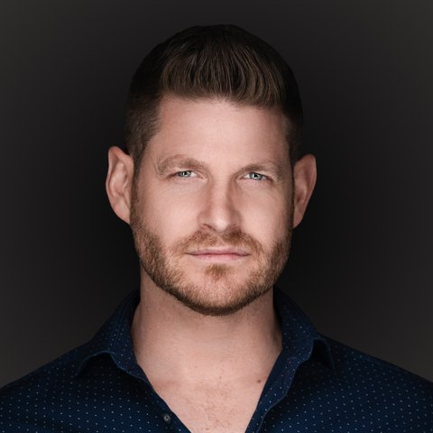
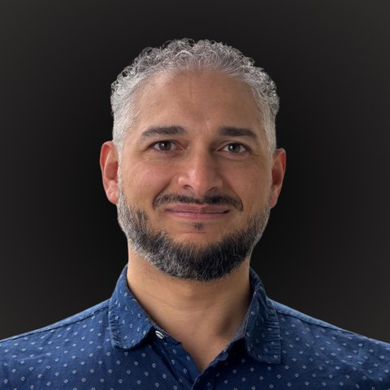
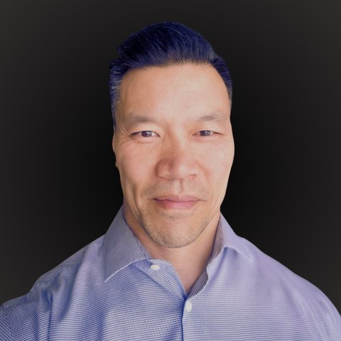
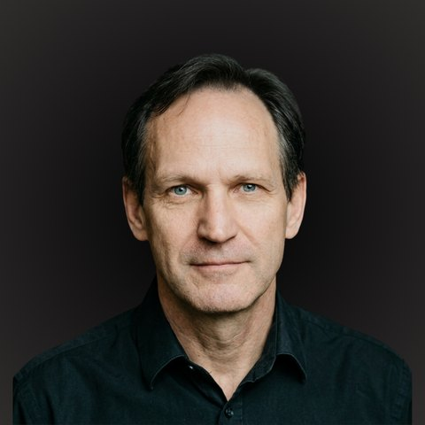
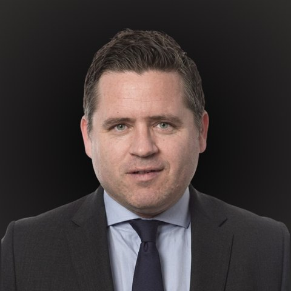
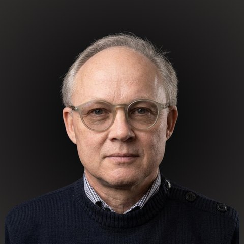
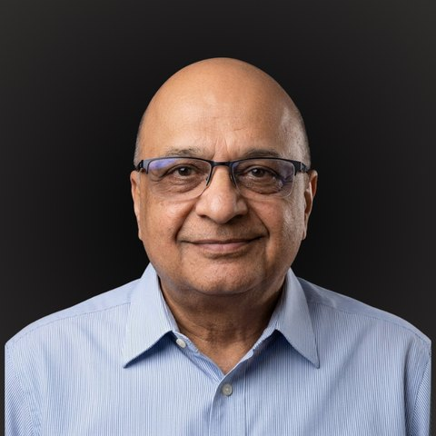
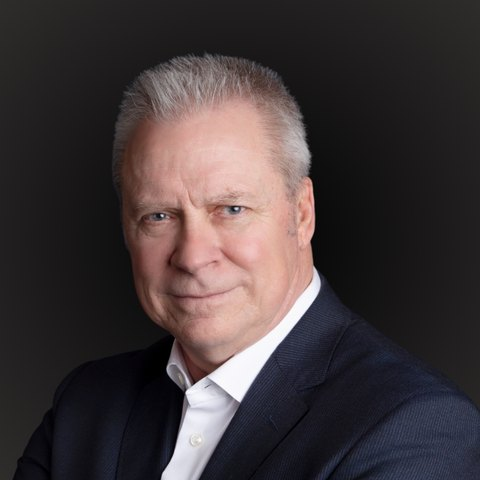
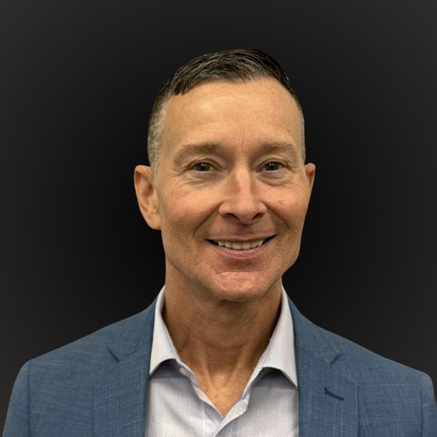

The founders, legal counsel, and advisory bench behind the 4orm build. Who they are, what they have actually done, and why this particular mix was recruited on purpose.
This is not a team of nine employees. It is three founders, two securities law firms on retainer, and four domain advisors, assembled around one build. The recruiting filter has been consistent from the first hire: institutional discipline first, technical depth second, conviction third. Every person on this page was brought in because the 4orm build has a specific regulated problem their career has already solved.
A structural note investors should hold onto while reading: KCS Capital is the independent technology and research firm developing the infrastructure. 4orm Finance is the single regulated entity that operates it, incorporated in Alberta under the ABCA. The people below are the shared bench behind both, and the bios state plainly which side of that line each person works on.
The advisory bench is not ornamental. Each advisor carries an active workstream in the roadmap, from Miika Makela's compliance architecture for the raise itself to Zed Sandeela's ownership of the target-state systems design. Where a name appears in this room's other documents, the work is theirs.

Chad's path to financial infrastructure runs through Canada's industrial economy, not a bank tower. He came up through oil and gas leading large field teams in high-risk, mission-critical environments, including a senior leadership role in the final phase of the multi-billion-dollar CNRL Horizon Coker Upgrade with care and control of more than 100 workers. For part of that career he was a certified High Angle Rope Rescue Technician, responsible for life-critical decisions under pressure. That is where the risk discipline in this data room comes from.
He moved into entrepreneurship in 2013, building a specialized mobile oil services company and engineering a custom oil regeneration system from the ground up, then expanding into multi-industry service businesses focused on scalable sales models and retention. As Innovation Lead at IEP Energy Economics he restructured sales operations and presented on renewable infrastructure across Western Canada, most recently as a keynote presenter at the Clean Energy BC Summit.
Several years of structured study of monetary history and capital markets led to one conclusion: settlement speed, capital efficiency, and asset liquidity will evolve through digital architecture, and the durable position is to build the compliant, regulated version inside institutional frameworks. He and the team have since run structured analysis on more than 46 companies across digital asset infrastructure, tokenization platforms, exchanges, and custodians. 4orm Finance is the product of that work.

Sam is the firm's institutional bridge. A third-generation entrepreneur, he is Executive Partner and VP of Major Business Development at Energy Economics, where he advances utility-scale solar, storage, and IPP development across Texas and North America. Eighteen-plus years building real-asset and infrastructure businesses taught him exactly where strong projects get strangled: financial systems that are slow, opaque, and not built for long-duration, cash-flow-generating assets. At KCS he leads executive-level engagement across banking, regulatory, and capital markets institutions, and he treats this market shift as a modernization cycle, not a disruption story.

Kevin is a serial entrepreneur and Fractional CMO with 22-plus years building and advising companies, and seven years running his agency Evolve One Digital as Chief Growth Strategist. From 2019 to 2025 he served as Senior Brand Strategist at Carbeeza, a Canadian automotive SaaS platform, repositioning its marketing around consumer trust and personalization. At KCS he owns strategic growth, brand positioning, and market expansion, working from a stated people-first philosophy: impact precedes income. A former competitive athlete with a Bachelor of Physical Education from the University of Alberta, his leadership style is disciplined, team-oriented, and performance-driven.
Three firms, deliberately split by function. Capiche handles the corporate and exempt-market machinery of the raise. Fasken (lead lawyer Michael Stevens) and Osler sit on the securities and regulatory framework underneath the regulated build. The legal structure (Capiche for corporate, the CFA-led trust work, and Fasken and Osler for securities) was locked in May 2026 and is tracked on the Path to Revenue page.

James is a Canadian securities lawyer and capital markets entrepreneur with 25-plus years building compliance-first capital infrastructure. He is founder and CEO of the Capiche Group: Capiche Capital Technologies (digitizing the private placement process for TSX-V and CSE companies), Capiche Crowdfunding (Canada's only nationwide exempt crowdfunding portal), and Capiche Legal LLP. He sits on the boards of Golden Sky Minerals and Marrelli Trust Company, and is a member of the BCSC Corporate Finance Stakeholder Forum.
For 4orm he advises on corporate organization, founder and governance structuring, financing architecture, and exempt market strategy. The subscription documents and financing platform for the pre-seed run through Capiche, under a $10K retainer.

Mike is an information technology law Partner in the Vancouver office of Fasken and a recognized leader in the British Columbia technology ecosystem. An experienced M&A and securities lawyer, he counsels founders, executives, and boards on corporate strategy, fundraising, governance, and strategic transactions from formation through to IPO or exit. At KCS he advises on the corporate and securities framework underpinning the regulated digital asset infrastructure work.

Miika is a CFA charter holder with 22-plus years across Canadian capital markets: institutional research, corporate finance, investor relations, and dealer compliance. He has served as Chief Compliance Officer at multiple Canadian registered firms (Equifaira, Robson Capital Markets, Ascendo Financial) and chaired the Investment Review Committee at FrontFundr, Canada's largest equity crowdfunding platform, from 2015 to 2018. His structuring specialty is precisely what this raise needs: TFSA- and RRSP-eligible vehicles, exempt-market financings, and warrant and milestone structures that align early investors with later rounds. The five-year model in this room was built with and audited by him.

Zed is the Senior Enterprise Architect for the 4orm build, with 20-plus years designing and modernizing systems in regulated environments. At Vancity he led payments modernization and AML compliance enhancements; at ICBC he introduced Business Capability Planning inside Enterprise Architecture; engagements span UBC, WorkSafeBC, Safeway, BC Housing, and TransLink. He owns 4orm's target-state architecture, the identity and asset-lifecycle model, and the institution-facing control framework. His framing of the build is the most quotable line in the room: an institutional settlement layer is banking architecture plus a digital custody layer, and he has architected banking-systems and payments-modernization programs in regulated environments.

Bruce is a merchant banker with 25-plus years structuring private and public equity transactions. Mench Capital, which he founded in 1999, has participated in or originated more than $500 million in transactions (Mench Capital figure; company estimate) across Canadian resources, structured products, and alternative investments, including tax-efficient flow-through vehicles. He has held senior roles at Qwest Bancorp, Maple Leaf Funds, Next Edge Capital, and Harbourfront Wealth Management, and serves as an independent director on public company boards. At KCS he advises on capital formation, investor positioning, and institutional market access.

Don is the founding cheque and the independent sounding board. A seasoned operator with 17-plus years of executive leadership, he has been Founder and President of a large development company since 2009, with a reputation built on disciplined project execution and construction management. He has been actively engaged in blockchain and decentralized finance markets for years, which is part of what drew him to back KCS early. He is not an employee or officer of the company; his contribution is perspective, testing strategy against decades of hands-on operating experience.
Read as a coverage map, the team answers the questions a regulated tokenization build actually raises. Securities law and exempt-market mechanics are covered twice over. Compliance has a former multi-firm CCO. Architecture has someone who has already built the banking side of the stack. Capital markets, real assets, and growth each have a named owner.
The honest gap is the one the hiring plan exists to close: the build needs senior engineering and compliance leadership in full-time seats, not advisory ones. That recruiting is live, it is funded as a use of proceeds of the pre-seed, and senior introductions are welcomed through the founders.
Full bios for every person on this page are published at kcs-capital.com/team, with LinkedIn profiles linked from each. The legal structure, advisor workstreams, and week-by-week progress are tracked live on this room's Path to Revenue page.
Photography and individual LinkedIn references are maintained on the KCS Capital site; this document is the data room's condensed record. Don H is identified here as published on the KCS Capital team page.
Prepared for approved data room members. This document does not constitute an offer to sell securities or a solicitation of an offer to buy securities. 4orm Finance is a single regulated entity incorporated in Alberta under the ABCA; technology is developed by KCS Capital, an independent research and development firm.